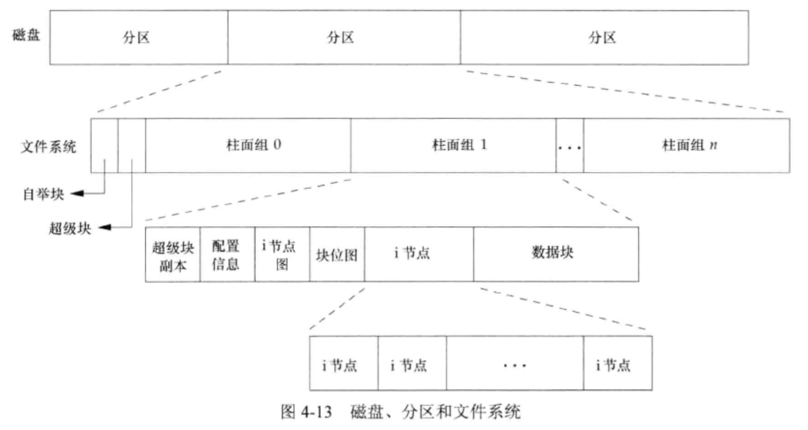
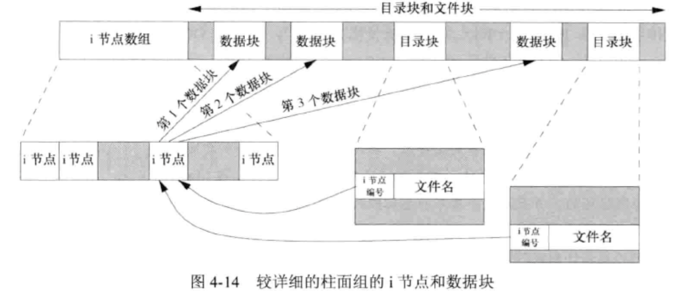
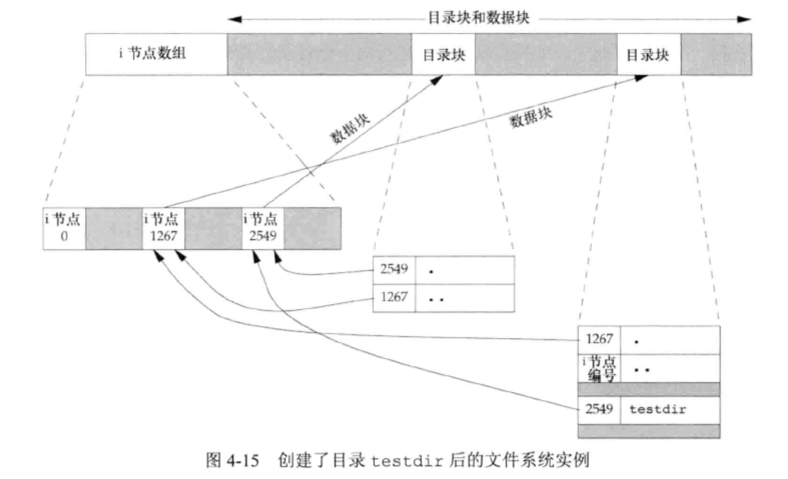
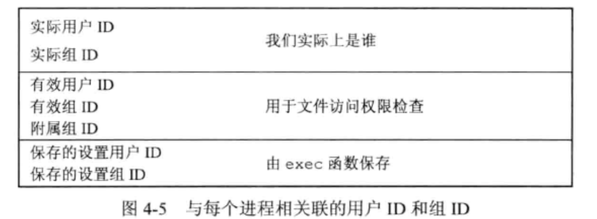
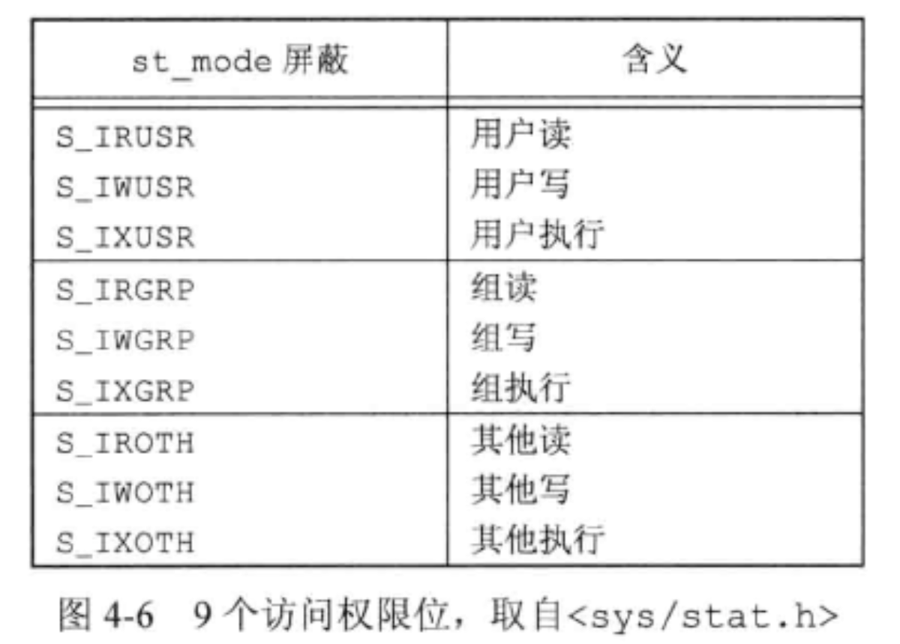
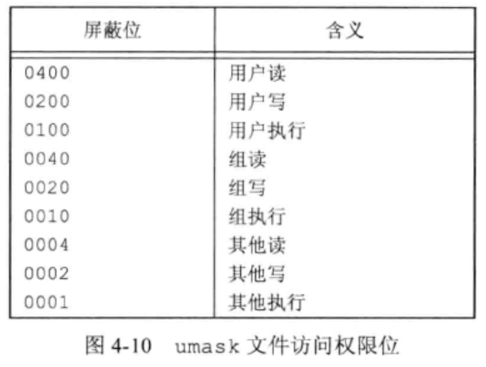
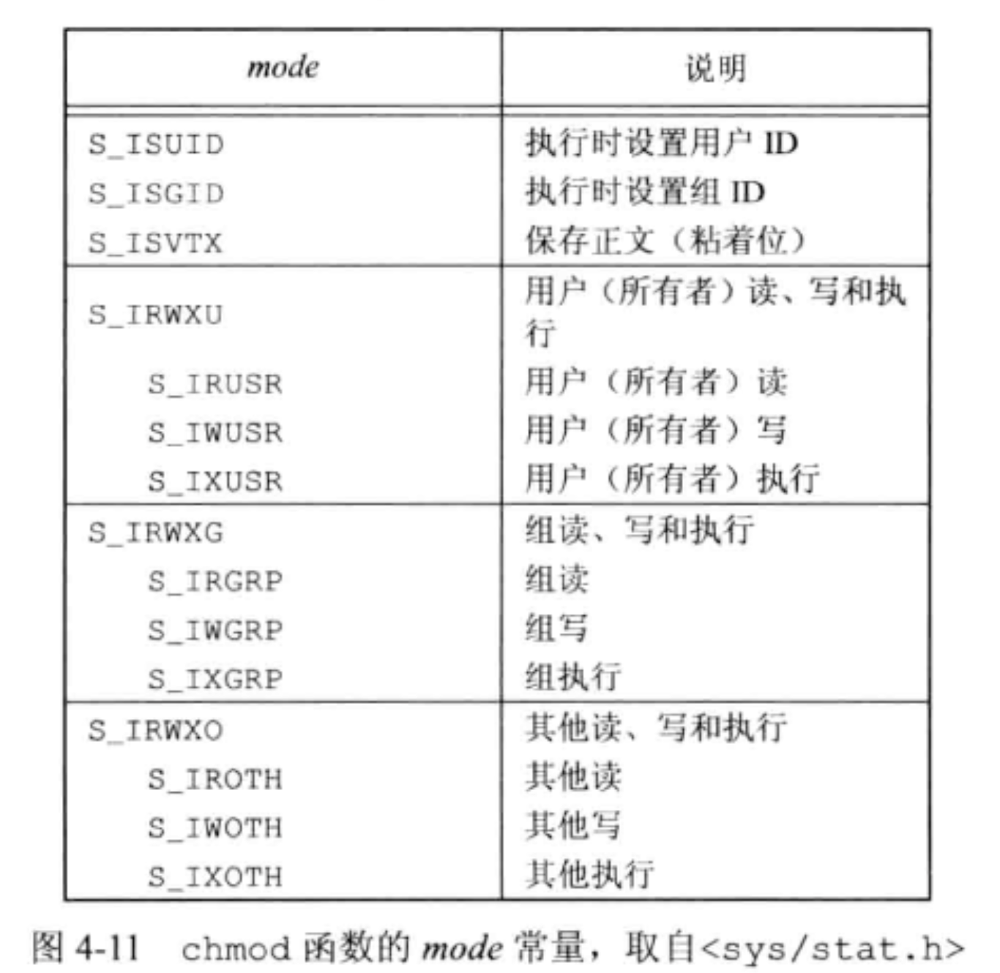

<!DOCTYPE html>
<html lang="en">

<head>
  <meta charset="utf-8" />
   
  <meta name="keywords" content="生活,旅行,思考,代码,博客" />
   
  <meta name="description" content="一座孤岛" />
  
  <meta name="viewport" content="width=device-width, initial-scale=1, maximum-scale=1" />
  <title>
    《UNIX环境高级编程》第4章——文件和目录 |  akaQin&#39;s Blog
  </title>
  <meta name="generator" content="hexo-theme-yilia-plus">
  
  <link rel="shortcut icon" href="/favicon.ico" />
  
  
<link rel="stylesheet" href="/css/style.css">

  
<script src="/js/pace.min.js"></script>


  

  

<link rel="alternate" href="/atom.xml" title="akaQin's Blog" type="application/atom+xml">
</head>

</html>

<body>
  <div id="app">
    <main class="content">
      <section class="outer">
  <article id="post-《UNIX环境高级编程》第4章——文件和目录" class="article article-type-post" itemscope
  itemprop="blogPost" data-scroll-reveal>

  <div class="article-inner">
    
    <header class="article-header">
       
<h1 class="article-title sea-center" style="border-left:0" itemprop="name">
  《UNIX环境高级编程》第4章——文件和目录
</h1>
  

    </header>
    

    
    <div class="article-meta">
      <a href="/2020/04/14/%E3%80%8AUNIX%E7%8E%AF%E5%A2%83%E9%AB%98%E7%BA%A7%E7%BC%96%E7%A8%8B%E3%80%8B%E7%AC%AC4%E7%AB%A0%E2%80%94%E2%80%94%E6%96%87%E4%BB%B6%E5%92%8C%E7%9B%AE%E5%BD%95/" class="article-date">
  <time datetime="2020-04-14T01:54:37.000Z" itemprop="datePublished">2020-04-14</time>
</a>
      
  <div class="article-category">
    <a class="article-category-link" href="/categories/%E3%80%8AAPUE%E3%80%8B%E7%AC%94%E8%AE%B0/">《APUE》笔记</a>
  </div>

      
      
<div class="word_count">
    <span class="post-time">
        <span class="post-meta-item-icon">
            <i class="ri-quill-pen-line"></i>
            <span class="post-meta-item-text"> 字数统计:</span>
            <span class="post-count">2.4k字</span>
        </span>
    </span>

    <span class="post-time">
        &nbsp; | &nbsp;
        <span class="post-meta-item-icon">
            <i class="ri-book-open-line"></i>
            <span class="post-meta-item-text"> 阅读时长≈</span>
            <span class="post-count">9分钟</span>
        </span>
    </span>
</div>

      
    </div>
    

    
    
    <div class="tocbot"></div>


    

    
    <div class="article-entry" itemprop="articleBody">
      


      

      
      <h2 id="文件属性"><a href="#文件属性" class="headerlink" title="文件属性"></a>文件属性</h2><h3 id="文件结构-stat"><a href="#文件结构-stat" class="headerlink" title="文件结构 stat"></a>文件结构 stat</h3><figure class="highlight c"><table><tr><td class="gutter"><pre><span class="line">1</span><br><span class="line">2</span><br><span class="line">3</span><br><span class="line">4</span><br><span class="line">5</span><br><span class="line">6</span><br><span class="line">7</span><br><span class="line">8</span><br><span class="line">9</span><br><span class="line">10</span><br><span class="line">11</span><br><span class="line">12</span><br><span class="line">13</span><br><span class="line">14</span><br><span class="line">15</span><br></pre></td><td class="code"><pre><span class="line"><span class="class"><span class="keyword">struct</span> <span class="title">stat</span> &#123;</span></span><br><span class="line">  <span class="keyword">mode_t</span>            st_mode;    <span class="comment">// file type &amp; mode (permisssions)</span></span><br><span class="line">  <span class="keyword">ino_t</span>             st_ino;     <span class="comment">// i-node number (serial number)</span></span><br><span class="line">  <span class="keyword">dev_t</span>             st_dev;     <span class="comment">// device number (file system)</span></span><br><span class="line">  <span class="keyword">dev_t</span>             st_rdev;    <span class="comment">// device number for special files</span></span><br><span class="line">  <span class="keyword">nlink_t</span>           st_link;    <span class="comment">// number of links</span></span><br><span class="line">  <span class="keyword">uid_t</span>             st_uid;     <span class="comment">// user ID of owner</span></span><br><span class="line">  <span class="keyword">gid_t</span>             st_gid;     <span class="comment">// group ID of owner</span></span><br><span class="line">  <span class="keyword">off_t</span>             st_size;    <span class="comment">// size in bytes, for regular files</span></span><br><span class="line">  <span class="class"><span class="keyword">struct</span> <span class="title">timespec</span>   <span class="title">st_atime</span>;</span>   <span class="comment">// time of last access</span></span><br><span class="line">  <span class="class"><span class="keyword">struct</span> <span class="title">timespec</span>   <span class="title">st_mtime</span>;</span>   <span class="comment">// time of last modification</span></span><br><span class="line">  <span class="class"><span class="keyword">struct</span> <span class="title">timespec</span>   <span class="title">st_ctime</span>;</span>   <span class="comment">// time of last file status change</span></span><br><span class="line">  <span class="keyword">blksize_t</span>         st_blksize; <span class="comment">// best I/O block size 对文件I/O较适合的块长度</span></span><br><span class="line">  <span class="keyword">blkcnt_t</span>          st_blocks;  <span class="comment">// number of disk blocks allocated 所分配的实际512字节块块数</span></span><br><span class="line">&#125;</span><br></pre></td></tr></table></figure>
<a id="more"></a>
<p>相关函数：</p>
<figure class="highlight c"><table><tr><td class="gutter"><pre><span class="line">1</span><br><span class="line">2</span><br><span class="line">3</span><br><span class="line">4</span><br><span class="line">5</span><br><span class="line">6</span><br><span class="line">7</span><br><span class="line">8</span><br><span class="line">9</span><br><span class="line">10</span><br></pre></td><td class="code"><pre><span class="line"><span class="meta">#<span class="meta-keyword">include</span> <span class="meta-string">&lt;sys/stat.h&gt;</span></span></span><br><span class="line"></span><br><span class="line"><span class="comment">//获取文件信息结构</span></span><br><span class="line"><span class="function"><span class="keyword">int</span> <span class="title">stat</span><span class="params">(<span class="keyword">const</span> <span class="keyword">char</span> *<span class="keyword">restrict</span> pathname, struct stat *<span class="keyword">restrict</span> buf)</span></span>;</span><br><span class="line"><span class="comment">//根据描述符获取</span></span><br><span class="line"><span class="function"><span class="keyword">int</span> <span class="title">fstat</span><span class="params">(<span class="keyword">int</span> fd, struct stat *buf)</span></span>;</span><br><span class="line"><span class="comment">//获取与符号链接相关的</span></span><br><span class="line"><span class="function"><span class="keyword">int</span> <span class="title">lstat</span><span class="params">(<span class="keyword">const</span> <span class="keyword">char</span> *<span class="keyword">restrict</span> pathname, struct stat *<span class="keyword">restrict</span> buf)</span></span>;</span><br><span class="line"><span class="comment">//</span></span><br><span class="line"><span class="function"><span class="keyword">int</span> <span class="title">fstatat</span><span class="params">(<span class="keyword">int</span> fd, <span class="keyword">const</span> <span class="keyword">char</span> *<span class="keyword">restrict</span> pathname, struct stat *<span class="keyword">restrict</span> buf, <span class="keyword">int</span> flag)</span></span>;</span><br></pre></td></tr></table></figure>

<h3 id="文件类型"><a href="#文件类型" class="headerlink" title="文件类型"></a>文件类型</h3><ul>
<li>普通文件（regular file)</li>
<li>目录文件（directory file）</li>
<li>块特殊文件（block special file）<br>这种类型的文件提供对设备（如磁盘）带缓冲的访问，每次访问以固定单位长度进行。</li>
<li>字特殊文件（character special file）<br>这种类型的文件提供对设备不带缓冲的访问，每次访问长度可变。系统中所有设备要么是字特殊文件，要么是块特殊文件。</li>
<li>FIFO<br>这种类型的文件用于进程间通信，也称为命名管道（named pipe）。</li>
<li>套接字（socket）<br>这种类型的文件用于进程间的网络通信，也可用于一台宿主机上进程之间的非网络通信。</li>
<li>符号链接（symbolic link）<br>这种类型的文件指向另一个文件。</li>
</ul>
<h3 id="文件长度"><a href="#文件长度" class="headerlink" title="文件长度"></a>文件长度</h3><p>st_size表示以字节为单位的文件长度。此字段只对普通文件、目录文件和符号链接有意义。</p>
<ul>
<li>对于普通文件，长度可以是0。</li>
<li>对于目录，长度通常是一个数（16或512）的整数倍。</li>
<li>对于符号链接，尝试是文件名中的字节数。</li>
</ul>
<h4 id="文件空洞"><a href="#文件空洞" class="headerlink" title="文件空洞"></a>文件空洞</h4><p>文件空洞是由所设置的偏移量超过文件尾端，并写入了数据后造成的。</p>
<h3 id="文件系统"><a href="#文件系统" class="headerlink" title="文件系统"></a>文件系统</h3><p>UNIX文件系统有很多种实现，这里讨论UFS文件系统。<br><br></p>
<ul>
<li>每个i节点都有一个链接计数，其值指向i节点的目录项数。只有计数减少到0时，才可删除文件（也就是释放该文件占用的数据块）。链接计数包含在stat结构里的st_nlink字段中，这种链接类型称为硬链接。</li>
<li>另一种链接类型为符号链接（symbolic link）。符号链接文件的实际内容包含了该符号链接所指向的文件的名字。</li>
<li>i节点包含了文件有关的所有信息：文件类型、文件访问权限位、文件长度和指向文件数据块的指针等。stat结构中大多数信息都取自i节点，除了文件名和i节点编号。</li>
<li>目录项中的i节点编号指向同一文件系统中的i节点。</li>
<li>在不更换文件系统的情况下，重命名文件并不会让文件的实际内容变动，只需要构造一个指向现有i几点的新目录项，并删除老的目录项，链接数不变。</li>
</ul>
<p></p>
<ul>
<li>每个叶目录的链接计数总是2（来自 该目录名 和<code>.</code>）。</li>
<li>父目录中的每一个子目录都使该父目录的链接计数加1（子目录中的<code>..</code>项指向父目录）</li>
</ul>
<h3 id="link、linkat、unlink、unlinkat和remove"><a href="#link、linkat、unlink、unlinkat和remove" class="headerlink" title="link、linkat、unlink、unlinkat和remove"></a>link、linkat、unlink、unlinkat和remove</h3><p>任何一个文件可以有多个目录项指向其i节点。创建一个指向现有文件的链接的方法是使用link或linkat函数。<br>删除一个目录项使用unlink函数，只有链接计数达到0时，该文件内容才可被删除。<br>remove既能删文件（等同于unlink）也能删目录（等同于rmdir）。</p>
<h3 id="rename-和-renameat"><a href="#rename-和-renameat" class="headerlink" title="rename 和 renameat"></a>rename 和 renameat</h3><p>用来对文件重命名。</p>
<h3 id="符号链接"><a href="#符号链接" class="headerlink" title="符号链接"></a>符号链接</h3><p>符号链接是对一个文件的间接指针，硬链接直接指向文件的i节点。<br>使用symlink或syslinkat函数创建一个符号链接。</p>
<h3 id="文件时间"><a href="#文件时间" class="headerlink" title="文件时间"></a>文件时间</h3><ul>
<li>st_atime 文件数据的最后访问时间</li>
<li>st_mtime 文件数据的最后修改时间</li>
<li>st_ctime i节点状态的最后更改时间</li>
</ul>
<p>操作函数：</p>
<ul>
<li>futimens</li>
<li>utimensat</li>
<li>utimes</li>
</ul>
<h2 id="权限及属组"><a href="#权限及属组" class="headerlink" title="权限及属组"></a>权限及属组</h2><h3 id="用户ID和组ID"><a href="#用户ID和组ID" class="headerlink" title="用户ID和组ID"></a>用户ID和组ID</h3><p>与一个进程相关联的ID：<br></p>
<ul>
<li>实际用户ID和实际组ID标识我们究竟是谁。这两个字段在登录时取自口令文件中的登录项。</li>
<li>有效用户ID、有效组ID以及附属组ID决定了我们的文件访问权限。</li>
<li>保存的设置用户ID和保存的设置组ID在执行一个程序时包含了有效用户ID和有效组ID的一个副本。</li>
</ul>
<p>执行一个程序文件时，进程的有效用户ID就是实际用户ID，有效组ID就是实际组ID。但可以在文件模式字（st_mode）中设置一个特殊标志，将执行此文件时的有效用户ID设置为文件所有者的用户ID；或将有效组ID设置为文件的组所有者ID。</p>
<h3 id="文件访问权限"><a href="#文件访问权限" class="headerlink" title="文件访问权限"></a>文件访问权限</h3><p>st_mode值也包含了对文件的访问权限位。<br></p>
<ul>
<li>读权限决定了我们能否打开一个文件进行读操作，包括读目录中的内容。</li>
<li>写权限决定了我们能否打开一个文件进行写操作。</li>
<li>打开任一文件时要对它的每一级父目录（包括当前目录）有执行权限。</li>
<li>在目录中创建一个新文件需要对该目录有写和执行权限。</li>
<li>删除一个现有文件，需要对包含该文件的目录具有写和执行权限，对该文件本身不需要有读、写权限。</li>
</ul>
<p><strong>目录文件的读权限（r）和写权限（w），都是针对目录文件本身。由于目录文件内只有文件名和inode号码，所以如果只有读权限，只能获取文件名，无法获取其他信息，因为其他信息都储存在inode节点中，而读取inode节点内的信息需要目录文件的执行权限（x）。</strong></p>
<h3 id="新文件和目录的所有权"><a href="#新文件和目录的所有权" class="headerlink" title="新文件和目录的所有权"></a>新文件和目录的所有权</h3><ul>
<li>新文件的用户ID设置为进程的有效用户ID。</li>
<li>新文件的组ID可以是进程的有效组ID也可以是它所在的目录的组ID。</li>
</ul>
<h3 id="access-和-faccessat"><a href="#access-和-faccessat" class="headerlink" title="access 和 faccessat"></a>access 和 faccessat</h3><p>用<code>open</code>函数打开文件时，内核以进程的有效用户ID和有效组ID做访问权限测试，<code>access</code>和<code>faccessat</code>函数按实际用户ID和实际组ID进行测试。</p>
<figure class="highlight c"><table><tr><td class="gutter"><pre><span class="line">1</span><br><span class="line">2</span><br><span class="line">3</span><br><span class="line">4</span><br></pre></td><td class="code"><pre><span class="line"><span class="meta">#<span class="meta-keyword">include</span> <span class="meta-string">&lt;unistd.h&gt;</span></span></span><br><span class="line"></span><br><span class="line"><span class="function"><span class="keyword">int</span> <span class="title">access</span><span class="params">(<span class="keyword">const</span> <span class="keyword">char</span> *pathname, <span class="keyword">int</span> mode)</span></span>;</span><br><span class="line"><span class="function"><span class="keyword">int</span> <span class="title">faccess</span><span class="params">(<span class="keyword">int</span> fd, <span class="keyword">const</span> <span class="keyword">char</span> *pathname, <span class="keyword">int</span> mode ,<span class="keyword">int</span> flag)</span></span>;</span><br></pre></td></tr></table></figure>

<h3 id="umask"><a href="#umask" class="headerlink" title="umask"></a>umask</h3><p><code>umask</code>函数为进程设置文件膜创建屏蔽字，并返回之前的值。</p>
<figure class="highlight c"><table><tr><td class="gutter"><pre><span class="line">1</span><br><span class="line">2</span><br><span class="line">3</span><br></pre></td><td class="code"><pre><span class="line"><span class="meta">#<span class="meta-keyword">include</span> <span class="meta-string">&lt;sys/stat.h&gt;</span></span></span><br><span class="line"></span><br><span class="line"><span class="function"><span class="keyword">mode_t</span> <span class="title">umask</span><span class="params">(<span class="keyword">mode_t</span> cmask)</span></span>;</span><br></pre></td></tr></table></figure>
<p></p>
<h3 id="chmod、fchmod和fchmodat"><a href="#chmod、fchmod和fchmodat" class="headerlink" title="chmod、fchmod和fchmodat"></a>chmod、fchmod和fchmodat</h3><p>这三个函数使我们更改现有文件的访问权限。</p>
<figure class="highlight c"><table><tr><td class="gutter"><pre><span class="line">1</span><br><span class="line">2</span><br><span class="line">3</span><br><span class="line">4</span><br><span class="line">5</span><br></pre></td><td class="code"><pre><span class="line"><span class="meta">#<span class="meta-keyword">include</span> <span class="meta-string">&lt;sys/stat.h&gt;</span></span></span><br><span class="line"></span><br><span class="line"><span class="function"><span class="keyword">int</span> <span class="title">chmod</span><span class="params">(<span class="keyword">const</span> <span class="keyword">char</span> *pathname, <span class="keyword">mode_t</span> mode)</span></span>;</span><br><span class="line"><span class="function"><span class="keyword">int</span> <span class="title">fchmod</span><span class="params">(<span class="keyword">int</span> fd, <span class="keyword">mode_t</span> mode)</span></span>;</span><br><span class="line"><span class="function"><span class="keyword">int</span> <span class="title">fchmodat</span><span class="params">(<span class="keyword">int</span> fd, <span class="keyword">const</span> <span class="keyword">char</span> *pathname, <span class="keyword">mode_t</span> mode, <span class="keyword">int</span> flag)</span></span>;</span><br></pre></td></tr></table></figure>
<p></p>
<h3 id="粘着位"><a href="#粘着位" class="headerlink" title="粘着位"></a>粘着位</h3><p>UNIX早期版本中，S_ISVTX位被称为<code>粘着位(sticky bit)</code>。如果一个可执行程序文件的这一位被设置了，那么当该程序第一次被执行，在其终止时，程序正文部分（机器指令）的一个副本仍被保存在交换区。这使得下次执行该程序时能较快的将其载入内存。</p>
<h4 id="Linux中的交换区"><a href="#Linux中的交换区" class="headerlink" title="Linux中的交换区"></a>Linux中的交换区</h4><blockquote>
<p>Linux中Swap（即：交换分区），类似于Windows的虚拟内存，就是当内存不足的时候，把一部分硬盘空间虚拟成内存使用,从而解决内存容量不足的情况。Android是基于Linux的操作系统，所以也可以使用Swap分区来提升系统运行效率 。</p>
</blockquote>
<p>现今交心的UNIX系统大多配置了虚拟存储系统以及快速文件系统，不再需要这种技术。<br>SUS允许针对目录设置粘着位，目录/tmp和/var/tmp是设置粘着位的典型候选者——任何用户都可在这两个目录中创建文件；任一用户对这两个目录的权限通常都是读、写、执行。</p>
<h3 id="chown、fchown、fchownat和lchown"><a href="#chown、fchown、fchownat和lchown" class="headerlink" title="chown、fchown、fchownat和lchown"></a>chown、fchown、fchownat和lchown</h3><p>这几个函数更改文件的用户ID和组ID。</p>
<h2 id="目录"><a href="#目录" class="headerlink" title="目录"></a>目录</h2><p>目录由DIR结构表示：</p>
<figure class="highlight c"><table><tr><td class="gutter"><pre><span class="line">1</span><br><span class="line">2</span><br><span class="line">3</span><br><span class="line">4</span><br><span class="line">5</span><br><span class="line">6</span><br><span class="line">7</span><br><span class="line">8</span><br><span class="line">9</span><br><span class="line">10</span><br><span class="line">11</span><br><span class="line">12</span><br></pre></td><td class="code"><pre><span class="line"><span class="keyword">typedef</span> <span class="class"><span class="keyword">struct</span> &#123;</span></span><br><span class="line">	<span class="keyword">int</span>	__dd_fd;	<span class="comment">// file descriptor associated with directory</span></span><br><span class="line">	<span class="keyword">long</span>	__dd_loc;	<span class="comment">// offset in current buffer</span></span><br><span class="line">	<span class="keyword">long</span>	__dd_size;	<span class="comment">// amount of data returned</span></span><br><span class="line">	<span class="keyword">char</span>	*__dd_buf;	<span class="comment">// data buffer</span></span><br><span class="line">	<span class="keyword">int</span>	__dd_len;	<span class="comment">// size of data buffer</span></span><br><span class="line">	<span class="keyword">long</span>	__dd_seek;	<span class="comment">// magic cookie returned</span></span><br><span class="line">	__unused <span class="keyword">long</span>	__padding; <span class="comment">// (__dd_rewind space left for bincompat)</span></span><br><span class="line">	<span class="keyword">int</span>	__dd_flags;	<span class="comment">// flags for readdir</span></span><br><span class="line">	<span class="keyword">__darwin_pthread_mutex_t</span> __dd_lock; <span class="comment">// for thread locking</span></span><br><span class="line">	<span class="class"><span class="keyword">struct</span> _<span class="title">telldir</span> *__<span class="title">dd_td</span>;</span> <span class="comment">// telldir position recording</span></span><br><span class="line">&#125; DIR;</span><br></pre></td></tr></table></figure>
<p>目录项 dirent结构与实现有关，至少包含下列两个成员：</p>
<figure class="highlight c"><table><tr><td class="gutter"><pre><span class="line">1</span><br><span class="line">2</span><br></pre></td><td class="code"><pre><span class="line"><span class="keyword">ino_t</span> d_ino; <span class="comment">//i-node number</span></span><br><span class="line"><span class="keyword">char</span> d_name[]; <span class="comment">//null-terminated filename</span></span><br></pre></td></tr></table></figure>
<p>视频中提及的一些网站🔗</p>
<p>电子书下载📖<br>Library Genesis:  gen.lib.rus.ec<br>Z library: zh.booksc.org<br>鸠摩搜书：jiumodiary.com<br>子午书简：5kindle.com</p>
<p>杂志下载🗞<br>tianfateng.cn</p>
<p>视频制作及剪辑<br>Keynote/ Lumafusion</p>
<ul>
<li><code>mkdir</code>/<code>mkdirat</code> 创建目录</li>
<li><code>rmdir</code> 删除目录</li>
<li><code>opendir</code>/<code>fdopendir</code> 打开目录</li>
<li><code>readdir</code> 读一个目录项</li>
<li><code>rewinddir</code> 将偏移量重制</li>
<li><code>closedir</code> 关闭文件</li>
<li><code>telldir</code> 获取偏移量</li>
<li><code>seekdir</code> 更改偏移量</li>
</ul>
<p><strong>有权限的用户都可以读目录，但只有内核才可以写目录。</strong></p>
<h3 id="当前工作目录"><a href="#当前工作目录" class="headerlink" title="当前工作目录"></a>当前工作目录</h3><p>每个进程都有一个当前工作目录，它是搜索所有相对路径名的起点。</p>
<ul>
<li><code>chdir</code>/<code>fchdir</code> 指定新的当前工作目录</li>
<li><code>getcwd</code> 获取当前工作目录</li>
</ul>

      
      <!-- reward -->
      
      <div id="reward-btn">
        打赏
      </div>
      
    </div>
    

      <!-- copyright -->
      
        <div class="declare">
          <ul class="post-copyright">
            <li>
              <i class="ri-copyright-line"></i>
              <strong>版权声明： </strong s>
              本博客所有文章除特别声明外，均采用 <a href="https://www.apache.org/licenses/LICENSE-2.0.html" rel="external nofollow"
                target="_blank">Apache License 2.0</a> 许可协议。转载请注明出处！
            </li>
          </ul>
        </div>
        
    <footer class="article-footer">
      
          
<div class="share-btn">
      <span class="share-sns share-outer">
        <i class="ri-share-forward-line"></i>
        分享
      </span>
      <div class="share-wrap">
        <i class="arrow"></i>
        <div class="share-icons">
          
          <a class="weibo share-sns" href="javascript:;" data-type="weibo">
            <i class="ri-weibo-fill"></i>
          </a>
          <a class="weixin share-sns wxFab" href="javascript:;" data-type="weixin">
            <i class="ri-wechat-fill"></i>
          </a>
          <a class="qq share-sns" href="javascript:;" data-type="qq">
            <i class="ri-qq-fill"></i>
          </a>
          <a class="douban share-sns" href="javascript:;" data-type="douban">
            <i class="ri-douban-line"></i>
          </a>
          <!-- <a class="qzone share-sns" href="javascript:;" data-type="qzone">
            <i class="icon icon-qzone"></i>
          </a> -->
          
          <a class="facebook share-sns" href="javascript:;" data-type="facebook">
            <i class="ri-facebook-circle-fill"></i>
          </a>
          <a class="twitter share-sns" href="javascript:;" data-type="twitter">
            <i class="ri-twitter-fill"></i>
          </a>
          <a class="google share-sns" href="javascript:;" data-type="google">
            <i class="ri-google-fill"></i>
          </a>
        </div>
      </div>
</div>

<div class="wx-share-modal">
    <a class="modal-close" href="javascript:;"><i class="ri-close-circle-line"></i></a>
    <p>扫一扫，分享到微信</p>
    <div class="wx-qrcode">
      
    </div>
</div>

<div id="share-mask"></div>
      
      
  <ul class="article-tag-list" itemprop="keywords"><li class="article-tag-list-item"><a class="article-tag-list-link" href="/tags/%E6%96%87%E4%BB%B6/" rel="tag">文件</a></li><li class="article-tag-list-item"><a class="article-tag-list-link" href="/tags/%E7%9B%AE%E5%BD%95/" rel="tag">目录</a></li></ul>


    </footer>

  </div>

  
  
  <nav class="article-nav">
    
      <a href="/2020/04/14/%E7%90%86%E8%A7%A3inode/" class="article-nav-link">
        <strong class="article-nav-caption">上一篇</strong>
        <div class="article-nav-title">
          
            理解inode
          
        </div>
      </a>
    
    
      <a href="/2020/04/14/%E3%80%8AUNIX%E7%8E%AF%E5%A2%83%E9%AB%98%E7%BA%A7%E7%BC%96%E7%A8%8B%E3%80%8B%E7%AC%AC2%E7%AB%A0%E2%80%94%E2%80%94UNIX%E6%A0%87%E5%87%86%E5%8F%8A%E5%AE%9E%E7%8E%B0/" class="article-nav-link">
        <strong class="article-nav-caption">下一篇</strong>
        <div class="article-nav-title">《UNIX环境高级编程》第2章——UNIX标准及实现</div>
      </a>
    
  </nav>


  

  
  
<!-- valine评论 -->
<div id="vcomments-box">
    <div id="vcomments">
    </div>
</div>
<script src="//cdn1.lncld.net/static/js/3.0.4/av-min.js"></script>
<script src='https://cdn.jsdelivr.net/npm/valine@1.3.10/dist/Valine.min.js'></script>
<script>
    new Valine({
        el: '#vcomments',
        app_id: 'X2Yrs2HgM1dBr94LBlfP7Jsj-gzGzoHsz',
        app_key: 'x2WQjNYF5CQseEAN1iSqXOLQ',
        path: window.location.pathname,
        notify: 'true',
        verify: 'false',
        avatar: 'mp',
        placeholder: '给我的文章加点评论吧~',
        recordIP: true
    });
    const infoEle = document.querySelector('#vcomments .info');
    if (infoEle && infoEle.childNodes && infoEle.childNodes.length > 0) {
        infoEle.childNodes.forEach(function (item) {
            item.parentNode.removeChild(item);
        });
    }
</script>
<style>
    #vcomments-box {
        padding: 5px 30px;
    }

    @media screen and (max-width: 800px) {
        #vcomments-box {
            padding: 5px 0px;
        }
    }

    #vcomments-box #vcomments {
        background-color: #fff;
    }

    .v .vlist .vcard .vh {
        padding-right: 20px;
    }

    .v .vlist .vcard {
        padding-left: 10px;
    }
</style>

  

  
  
  

</article>

</section>
      <footer class="footer">
  <div class="outer">
    <ul class="list-inline">
      <li>
        &copy;
        2019-2020
        Aaron Qin
      </li>
      <li>
        
      </li>
    </ul>
    <ul class="list-inline">
      <li>
        
        
        <span>
  <i>PV:<span id="busuanzi_value_page_pv"></span></i>
  <i>UV:<span id="busuanzi_value_site_uv"></span></i>
</span>
        
      </li>
      <li>
        <!-- cnzz统计 -->
        
      </li>
    </ul>
  </div>
</footer>
    <div class="to_top">
        <div class="totop" id="totop">
  <i class="ri-arrow-up-line"></i>
</div>
      </div>
    </main>
      <aside class="sidebar">
        <button class="navbar-toggle"></button>
<nav class="navbar">
  
  <div class="logo">
    <a href="/"></a>
  </div>
  
  <ul class="nav nav-main">
    
    <li class="nav-item">
      <a class="nav-item-link" href="/">主页</a>
    </li>
    
    <li class="nav-item">
      <a class="nav-item-link" href="/archives">归档</a>
    </li>
    
    <li class="nav-item">
      <a class="nav-item-link" href="/categories">分类</a>
    </li>
    
    <li class="nav-item">
      <a class="nav-item-link" href="/tags">标签</a>
    </li>
    
    <li class="nav-item">
      <a class="nav-item-link" href="/about/me">关于我</a>
    </li>
    
  </ul>
</nav>
<nav class="navbar navbar-bottom">
  <ul class="nav">
    <li class="nav-item">
      
      <a class="nav-item-link nav-item-search"  title="Search">
        <i class="ri-search-line"></i>
      </a>
      
      
      <a class="nav-item-link" target="_blank" href="/atom.xml" title="RSS Feed">
        <i class="ri-rss-line"></i>
      </a>
      
    </li>
  </ul>
</nav>
<div class="search-form-wrap">
  <div class="local-search local-search-plugin">
  <input type="search" id="local-search-input" class="local-search-input" placeholder="Search...">
  <div id="local-search-result" class="local-search-result"></div>
</div>
</div>
      </aside>
      <div id="mask"></div>

<!-- #reward -->
<div id="reward">
  <span class="close"><i class="ri-close-line"></i></span>
  <p class="reward-p"><i class="ri-cup-line"></i>请我喝杯咖啡吧~</p>
  <div class="reward-box">
    
    <div class="reward-item">
      
      <span class="reward-type">支付宝</span>
    </div>
    
    
    <div class="reward-item">
      
      <span class="reward-type">微信</span>
    </div>
    
  </div>
</div>
      
<script src="/js/jquery-2.0.3.min.js"></script>


<script src="/js/jquery.justifiedGallery.min.js"></script>


<script src="/js/lazyload.min.js"></script>


<script src="/js/busuanzi-2.3.pure.min.js"></script>


<script src="/js/share.js"></script>


<script src="/fancybox/jquery.fancybox.min.js"></script>


<script>
  try {
    var typed = new Typed("#subtitle", {
    strings: ['面朝大海，春暖花开','愿你一生努力，一生被爱','想要的都拥有，得不到的都释怀'],
    startDelay: 0,
    typeSpeed: 200,
    loop: true,
    backSpeed: 100,
    showCursor: true
    });
  } catch (err) {
  }
  
</script>


<script src="/js/tocbot.min.js"></script>

<script>
  // Tocbot_v4.7.0  http://tscanlin.github.io/tocbot/
  tocbot.init({
    tocSelector: '.tocbot',
    contentSelector: '.article-entry',
    headingSelector: 'h1, h2, h3, h4, h5, h6',
    hasInnerContainers: true,
    scrollSmooth: true,
    scrollContainer:'main',
    positionFixedSelector: '.tocbot',
    positionFixedClass: 'is-position-fixed',
    fixedSidebarOffset: 'auto',
    onClick: (e) => {
      $('.toc-link').removeClass('is-active-link');
      $(`a[href=${e.target.hash}]`).addClass('is-active-link');
      $(e.target.hash).scrollIntoView();
      return false;
    }
  });
</script>


<script>
  var ayerConfig = {
    mathjax: false
  }
</script>


<script src="/js/ayer.js"></script>


<script src="https://cdn.jsdelivr.net/npm/jquery-modal@0.9.2/jquery.modal.min.js"></script>
<link rel="stylesheet" href="https://cdn.jsdelivr.net/npm/jquery-modal@0.9.2/jquery.modal.min.css">


<!-- Root element of PhotoSwipe. Must have class pswp. -->
<div class="pswp" tabindex="-1" role="dialog" aria-hidden="true">

    <!-- Background of PhotoSwipe. 
         It's a separate element as animating opacity is faster than rgba(). -->
    <div class="pswp__bg"></div>

    <!-- Slides wrapper with overflow:hidden. -->
    <div class="pswp__scroll-wrap">

        <!-- Container that holds slides. 
            PhotoSwipe keeps only 3 of them in the DOM to save memory.
            Don't modify these 3 pswp__item elements, data is added later on. -->
        <div class="pswp__container">
            <div class="pswp__item"></div>
            <div class="pswp__item"></div>
            <div class="pswp__item"></div>
        </div>

        <!-- Default (PhotoSwipeUI_Default) interface on top of sliding area. Can be changed. -->
        <div class="pswp__ui pswp__ui--hidden">

            <div class="pswp__top-bar">

                <!--  Controls are self-explanatory. Order can be changed. -->

                <div class="pswp__counter"></div>

                <button class="pswp__button pswp__button--close" title="Close (Esc)"></button>

                <button class="pswp__button pswp__button--share" style="display:none" title="Share"></button>

                <button class="pswp__button pswp__button--fs" title="Toggle fullscreen"></button>

                <button class="pswp__button pswp__button--zoom" title="Zoom in/out"></button>

                <!-- Preloader demo http://codepen.io/dimsemenov/pen/yyBWoR -->
                <!-- element will get class pswp__preloader--active when preloader is running -->
                <div class="pswp__preloader">
                    <div class="pswp__preloader__icn">
                        <div class="pswp__preloader__cut">
                            <div class="pswp__preloader__donut"></div>
                        </div>
                    </div>
                </div>
            </div>

            <div class="pswp__share-modal pswp__share-modal--hidden pswp__single-tap">
                <div class="pswp__share-tooltip"></div>
            </div>

            <button class="pswp__button pswp__button--arrow--left" title="Previous (arrow left)">
            </button>

            <button class="pswp__button pswp__button--arrow--right" title="Next (arrow right)">
            </button>

            <div class="pswp__caption">
                <div class="pswp__caption__center"></div>
            </div>

        </div>

    </div>

</div>

<link rel="stylesheet" href="https://cdn.jsdelivr.net/npm/photoswipe@4.1.3/dist/photoswipe.min.css">
<link rel="stylesheet" href="https://cdn.jsdelivr.net/npm/photoswipe@4.1.3/dist/default-skin/default-skin.css">
<script src="https://cdn.jsdelivr.net/npm/photoswipe@4.1.3/dist/photoswipe.min.js"></script>
<script src="https://cdn.jsdelivr.net/npm/photoswipe@4.1.3/dist/photoswipe-ui-default.min.js"></script>

<script>
    function viewer_init() {
        let pswpElement = document.querySelectorAll('.pswp')[0];
        let $imgArr = document.querySelectorAll(('.article-entry img:not(.reward-img)'))

        $imgArr.forEach(($em, i) => {
            $em.onclick = () => {
                // slider展开状态
                // todo: 这样不好，后面改成状态
                if (document.querySelector('.left-col.show')) return
                let items = []
                $imgArr.forEach(($em2, i2) => {
                    let img = $em2.getAttribute('data-idx', i2)
                    let src = $em2.getAttribute('data-target') || $em2.getAttribute('src')
                    let title = $em2.getAttribute('alt')
                    // 获得原图尺寸
                    const image = new Image()
                    image.src = src
                    items.push({
                        src: src,
                        w: image.width || $em2.width,
                        h: image.height || $em2.height,
                        title: title
                    })
                })
                var gallery = new PhotoSwipe(pswpElement, PhotoSwipeUI_Default, items, {
                    index: parseInt(i)
                });
                gallery.init()
            }
        })
    }
    viewer_init()
</script>


<script type="text/javascript" src="https://js.users.51.la/20544303.js"></script>
  </div>
</body>

</html>